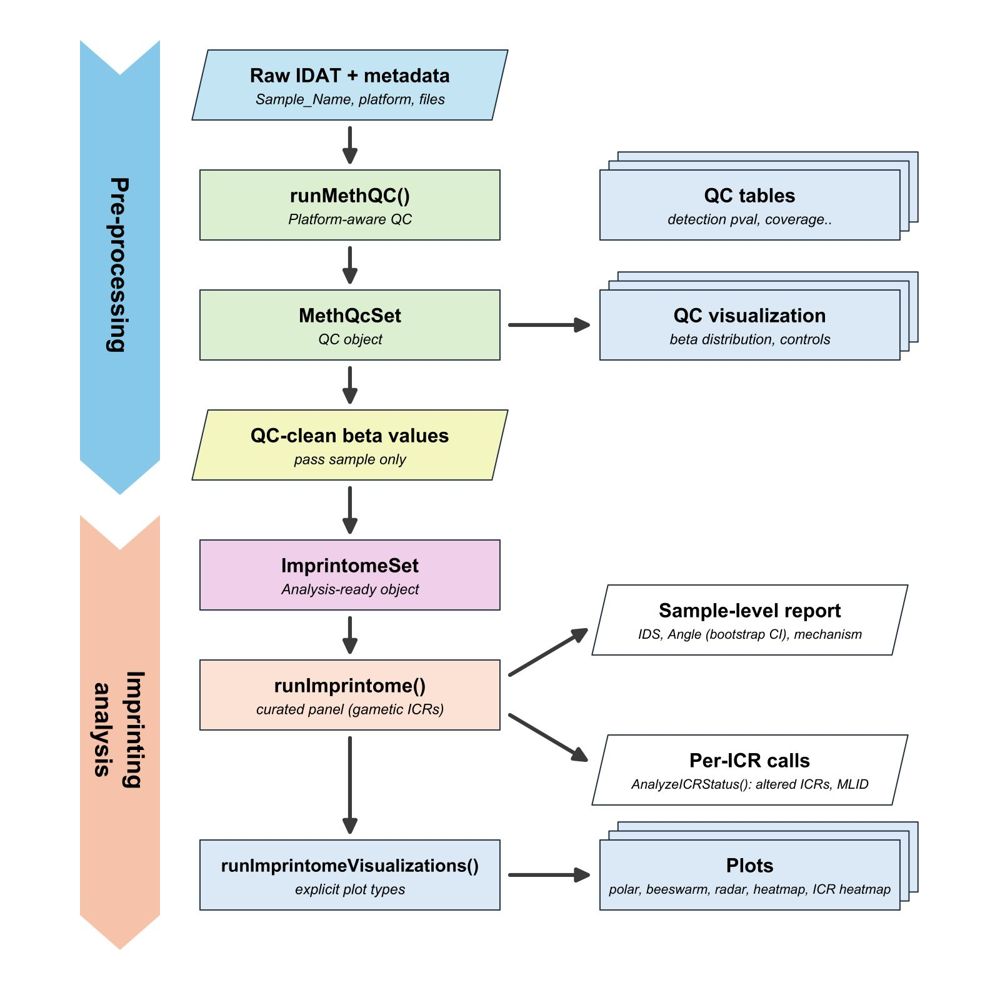

imprintomeR
Website: https://hongjianjin.github.io/imprintomeR/ (function reference, vignettes, guides and worked examples)
imprintomeR measures and visualizes genomic imprinting disturbance from Illumina 450K, EPICv1 and EPICv2 methylation arrays. Starting from IDAT files, it runs quality control (QC) and preprocessing, then scores each sample at imprinting control regions (ICRs):
-
Scores:
- The Imprinting Deviation Index (IDI), (β − 0.5) × 2, places each probe on a −1 to 1 scale, where 0 is the half-methylated state expected at an ICR.
- From the paternal and maternal deviations, the Imprinting Deviation Score (IDS) gives each sample’s overall deviation, and the Angle gives its direction. Bootstrap uncertainty intervals are optional.
- Per-ICR calls: each ICR is scored on its own, with a multi-locus summary per sample.
- Reference centring: scores can be centred on control samples from the same study.
- Plots: polar plots (IDS and Angle), radar plots (median IDI per ICR), rainfall plots (IDI per probe), beeswarm plots and per-ICR heatmaps.
The workflow is built on two S4 classes:
- MethQcSet: QC results and preprocessed data for one array platform.
- ImprintomeSet: scores and annotations, ready for analysis and plotting.
Every step can be run from R or with the command-line scripts in inst/scripts/ (see the command-line guide).
Installation
imprintomeR needs R ≥ 4.1 and imports Bioconductor packages (minfi, ComplexHeatmap), so install it with BiocManager, which finds both CRAN and Bioconductor dependencies:
if (!requireNamespace("BiocManager", quietly = TRUE)) install.packages("BiocManager")
BiocManager::install(c("remotes", "hongjianjin/imprintomeR"))On Linux, Bioconductor packages are compiled from source and need the curl, OpenSSL and libxml2 development libraries; on Debian or Ubuntu, install them first with sudo apt-get install libcurl4-openssl-dev libssl-dev libxml2-dev. pak::pak("hongjianjin/imprintomeR") also works. Optional packages (Suggests) are needed only for some functions, which say so when one is missing.
The annotation files (about 52 MB: probe annotation and the ICR probe panels, hg19 and hg38) are installed with the package under inst/extdata/; if one is missing, imprintomeR prints a note when it loads and setup_imprintome_data() downloads it.
hg38 (GRCh38) is the default genome; pass genome = "hg19" (CLI --genome hg19) for GRCh37 coordinates. Probe IDs, parental-origin labels and DMR_type are the same in both builds for every probe-level panel except Jima (two extra probes in hg38), so scores do not depend on the build.
Quick start
Both parts run as pasted (about a minute in all); CI runs this block on every change.
library(imprintomeR)
# A. From beta values (QC done elsewhere): the bundled example, GEO GSE52576 (450K, 28 samples)
beta <- imprintome_example("beta") # probes x samples
meta <- imprintome_example("meta") # Sample_Name, Sample_Group, title, health_state, gender
panels <- readRDS(system.file("extdata", "probesets_hg38.rds", package = "imprintomeR"))
x <- ImprintomeSet(beta = beta, meta = meta, probeset = panels[["selected"]],
genome = "hg38", assay = "450K")
x <- runImprintome(x, probeset = "selected", icr = TRUE)
res <- results(x)[["AnalyzeImprintStatus.selected"]]
table(meta$Sample_Group[match(res$Sample_Name, meta$Sample_Name)], res$Mechanism)
plot(x, plot_type = "polar", outFile = "polar.pdf")
export(x, outdir = "imprintome_results", prefix = "GSE52576")
# B. From IDAT files, with QC: example 450K IDATs from Bioconductor (BiocManager::install("minfiData"))
meta <- minfi::read.metharray.sheet(system.file("extdata", package = "minfiData")) # adds Basename
qcset <- runMethQC(meta, platform = "450K", outdir = "qc_output", prefix = "minfiData")
export(qcset, outdir = "qc_output", prefix = "minfiData", format = c("xlsx", "rds"))
qcset <- subsetMethQC(qcset, final_qc = "PASS") # keep samples that passed QC
x <- runImprintome(as.ImprintomeSet(qcset), probeset = "selected")
results(x)[["AnalyzeImprintStatus.selected"]][, c("Sample_Name", "IDS", "Angle", "Status")]In part A, the moles and the leukocytes with paternal uniparental disomy are called Pat-Gain+Mat-Loss, the parthenogenetic cells and the maternal-disomy sample Mat-Gain+Pat-Loss, and the somatic tissues, placentas and embryonic stem cells normal (ROI); sperm, with a paternal germline pattern, is called Pat-Gain+Mat-Loss as expected.
For your own data, see Input files; each step is described in Quality control and Analysis.
Input files
There are two entry points. Start from IDAT files to run QC with imprintomeR (part B of the Quick start), or from a beta matrix if QC and normalization were done elsewhere (part A).
IDAT files → runMethQC()
| Input | Requirement |
|---|---|
| IDAT files | One _Grn.idat and one _Red.idat file per sample (.idat.gz also read), from a 450K, EPICv1 or EPICv2 array. |
Sample sheet (data.frame) |
One row per sample. Required: Sample_Name (unique sample ID, used in every result table) and Basename (the IDAT path without the _Grn.idat/_Red.idat suffix, e.g. idats/200925700125_R07C01). Optional: Sample_Group (groups samples in QC reports and plots; when absent, as.ImprintomeSet() uses Sample_Name), Donor_ID (checked against the donors predicted from the SNP probes), Platform (filled in by check_platform()). Other columns are kept and exported. |
| Platform | One platform per runMethQC() call: platform = "450K", "EPIC" or "EPICv2". For a mixed cohort, run meta <- check_platform(meta) and call runMethQC() on each platform’s rows. EPICv2 needs the Bioconductor packages IlluminaHumanMethylationEPICv2manifest and IlluminaHumanMethylationEPICv2anno.20a1.hg38, and aggregate_probes() before as.ImprintomeSet(). |
minfi::read.metharray.sheet() reads an Illumina sample sheet (CSV) and adds Basename; any data.frame with these columns also works. Example: minfi::read.metharray.sheet(system.file("extdata", package = "minfiData")) (6 samples, 450K).
Beta matrix → ImprintomeSet()
| Input | Requirement |
|---|---|
| Beta matrix | Probes × samples, numeric, values between 0 and 1 (percentages or M-values are rejected with an error). Probe IDs (cg…, as on the 450K/EPIC manifests) as row names, or in a first column named TargetID, NAME or ID. Column names are sample IDs. Missing values (NA) are allowed. Only probes of the chosen panel are used, so a genome-wide matrix and a panel-only matrix give the same result; for EPICv2, first collapse replicate probes (e.g. cg06373096_TC11, cg06373096_TC12 → cg06373096), for example to their median as aggregate_probes() does for a MethQcSet. |
Metadata (data.frame) |
Required: Sample_Name (unique; matched to the beta column names) and Sample_Group (or pass auto_group = TRUE). Samples present in only one of the two tables are dropped. Other columns are kept and exported. |
| Panel, genome, assay |
probeset: a panel from probesets_hg38.rds / probesets_hg19.rds (see Bundled probesets); genome: "hg38" or "hg19"; assay: the array type ("450K", "EPICv1" or "EPICv2"), recorded with the results. |
Example files: imprintome_example("beta", path = TRUE) and imprintome_example("meta", path = TRUE) are tab-delimited text files in this layout (782 probes × 28 samples from GEO GSE52576), and can be passed directly to the command-line script (run_imprintomeR.R --beta-file ... --meta-file ...). For data from GEO, the GSE52576 tutorial starts from a series-matrix beta table, and the GSE240091 tutorial from IDAT files.
Workflow

Metadata + IDAT files (one or more platforms)
↓
[check_platform(meta)] → detect the array platform of each sample
↓
Subset meta by platform
↓
[runMethQC(meta_platform)] → read IDATs → normalize beta (noob by default) + detection p-values
→ QC metrics, Final.QC PASS/FAIL per sample → MethQcSet
↓
[subsetMethQC(qcset, final_qc = "PASS")] → keep passing samples
↓
[aggregate_probes(qcset)] → EPICv2 only: collapse replicate probes (required)
↓
[as.ImprintomeSet(qcset)] → ImprintomeSet with the bundled panels (hg38 by default)
↑
└── or ImprintomeSet(beta, meta, ...) for data already QC-cleaned elsewhere
↓
[runImprintome()] → IDS, Angle and Mechanism per sample
(+ per-ICR calls and multi-locus summary with icr = TRUE;
bootstrap intervals with n_boot)
↓
[plot() / export()] → plots and result tablesEach MethQcSet holds one platform, so cohorts on different arrays are never merged before QC. In code, check_platform(), runMethQC(platform = ) and the Platform column use the values "450K", "EPIC" (EPICv1) and "EPICv2".
Core Formulas
- Imprinting Deviation Index (IDI): (beta - 0.5) × 2
- Imprinting Deviation Score (IDS): √((paternal_median - 0.5)² + (maternal_median - 0.5)²)
- Deviation Angle: atan2(maternal_median - 0.5, paternal_median - 0.5)
- With a control reference, 0.5 is replaced by each probe’s median beta across the controls: paternal/maternal deviations are medians of (beta − reference), and IDS and Angle are computed from these deviations (see Reference centring).
The paternal and maternal classes come from the probeset’s ORIGIN annotation, and array beta values are bulk, not allele-specific, measurements. IDS and Angle are therefore descriptive summaries along the annotated parental axes, not parent-of-origin calls. The default IDS cutoff (0.2) and confidence tiers (0.1/0.2/0.4, the Confidence column) are exploratory screening conventions; calibrate them on tissue-matched controls where possible, and use bootstrap intervals (n_boot) to see which samples are borderline (Uncertainty and calibration). More on the geometry: Analysis.
Angle Direction Mapping
Each 45-degree sector of the polar plot is labelled with the direction of shift along the annotated paternal and maternal axes, such as paternal gain or maternal loss of methylation, or global hypo- or hypermethylation. Each label covers the 45° sector centred on the angle in the table (for example, Pat-Gain covers 337.5° to 22.5°). Samples with IDS < 0.2 are labelled ROI (retention of imprinting). The labels are exploratory directional summaries of bulk beta values, not parent-of-origin molecular calls; with n_boot, Mechanism_support reports how stable a sample’s label is under resampling.
| Angle (°) | Sector (°) |
Mechanism label |
|---|---|---|
| 0 | 337.5 – 22.5 | Pat-Gain |
| 45 | 22.5 – 67.5 | Global-Hyper |
| 90 | 67.5 – 112.5 | Mat-Gain |
| 135 | 112.5 – 157.5 | Mat-Gain+Pat-Loss |
| 180 | 157.5 – 202.5 | Pat-Loss |
| 225 | 202.5 – 247.5 | Global-Hypo |
| 270 | 247.5 – 292.5 | Mat-Loss |
| 315 | 292.5 – 337.5 | Pat-Gain+Mat-Loss |
Main analysis options
runImprintome() arguments (command-line flags of run_imprintomeR.R in brackets). Details and examples: Analysis.
| Argument | Default | What it does |
|---|---|---|
probeset [--probeset] |
"selected" |
Probe panel to score (see Bundled probesets) |
dmr_type [--dmr-type] |
gametic ICRs for selected
|
"all" scores every probe; "secondary" reports secondary DMRs separately |
reference_group / reference_beta [--reference-group / --reference-file] |
fixed 0.5 | Centre scores on in-cohort or external tissue-matched controls (Reference centring) |
infinium_type [--infinium-type] |
all probes |
"balanced" averages type I and type II deviations |
icr [--icr] |
FALSE |
Adds per-ICR calls, the multi-locus summary and the icr_heatmap plot (Per-ICR scores) |
delta_cutoff, z_cutoff
|
0.175, 2 | Per-ICR call thresholds used with icr = TRUE (z needs controls) |
balance [--balance icr] |
probe-pooled |
"icr" weights each ICR equally in IDS/Angle |
n_boot, n_perm [--n-boot, --n-perm] |
0 | Bootstrap intervals, Mechanism_support and Status_interval (interval above, below or spanning the cutoff) (resample_reference = TRUE also resamples in-cohort controls); exploratory origin permutation test, ICR-level by default (control reference only) (Uncertainty) |
ids_cutoff [--ids-cutoff] |
0.2 | IDS below which a sample is Normal with Mechanism ROI; CalibrateIDS() derives a cohort cutoff from controls |
Quality control
runMethQC() marks each sample Final.QC = "PASS" when both hold:
- at least 95% of probes are detected at p <
pcutoff(default 0.05;runMethQC(..., pcutoff = )orrun_meth_QC.R --pcutoff); - the Bisulfite Conversion I Green and Red control-probe metrics are both at least 1 (
CtrlMetrics.QC); if the control probes cannot be read, only criterion 1 applies.
The control-probe metrics, SNP sample-swap check and predicted donor IDs follow the ewastools methods (Heiss and Just, 2018) and give the same results as ewastools 1.8.2, without needing it installed.
All other metrics (other control metrics, intensities, predicted sex, SNP contamination, donor IDs) are reported, not used. Beta values are noob-normalized by default ("noob_swan" and "raw" are alternatives). Normalization, QC tables, plots and export files: Quality control.
Bundled probesets
probesets_hg19.rds and probesets_hg38.rds hold the same eleven panels: the probe-level Jima, Joshi, Court, Rosenski, selected, NanoImprint, chr11p15 and chr20q13 (GNAS) panels, and the region-level Rosenski_region, chr11p15_region and chr20q13_region. Every probe-level panel carries parental-origin (ORIGIN), ICR_name, DMR_type (following Monk et al., 2018) and Infinium design type.
selected, the default, keeps the probes present in at least two of Court, Jima, Joshi and Rosenski that are on the 450K array and on EPICv1 and/or EPICv2: 782 probes, all on 450K, 742 on EPICv1 and 683 on EPICv2. How the panels and selected were built, with the platform table: Probesets.
Plots
plot(x, plot_type = ...) on an ImprintomeSet:
| Plot type | Shows |
|---|---|
polar (and auto) |
IDS and Angle of every sample |
radar |
Median IDI of each ICR, one sample |
rainfall |
IDI of each probe along the genome, one sample |
beeswarm, beeswarm_origin, beeswarm_chr
|
Probe beta values by sample, by parental origin, or by chromosome |
mirror_density |
Maternal vs paternal beta distributions |
violin |
Beta distribution of each sample |
heatmap_by_probe, heatmap_by_gene, circular_heatmap, cor_heatmap
|
Probe, gene, circular and sample-correlation heatmaps |
icr_heatmap |
Per-ICR deviations, samples × ICRs (after runImprintome(icr = TRUE)) |
p <- plot(x, plot_type = "polar", result_name = "AnalyzeImprintStatus.selected",
colorColumn = "Sample_Group", outFile = "polar.pdf")
x <- runImprintomeVisualizations(x, plot_types = "default", probeset = "selected")Colours by parental origin follow the ORIGIN annotation (legend “Annotated parental origin”), not allele-specific measurements. QC plots on a MethQcSet take type = instead of plot_type =. All plot types with examples: Plots.
Documentation
All guides, vignettes and the function reference are on the website; the sources of the guides are in vignettes/articles/.
- Quality control: QC preprocessing, normalization, QC tables, merging and export files
-
Analysis:
ImprintomeSet, scoring options, reference centring, per-ICR calls, uncertainty and calibration, export - Plots: all plot types with examples
-
Probesets: bundled panels, how
selectedwas built, platform coverage -
FAQ: choosing an IDS cutoff and interpreting results (control references, bootstrap intervals,
Mechanism_support, per-ICR calls, the multi-locus flag) - Command-line guide: command-line QC and analysis
- R vignettes:
vignette("imprintomeset-quickstart"),vignette("imprintomeset-results-export"),vignette("imprintomeR-workflow-basic")(core functions without S4 objects) - Worked GEO examples (guides in
vignettes/articles/, with run notebooks and their outputs intutorials/):- GSE52576 (guide, notebook): androgenetic and parthenogenetic samples
- GSE240091 (guide, notebook): QC and analysis of an EPIC cohort
- GSE74738 (guide, notebook): 450K placentas scored against their own controls, with per-ICR calls, bootstrap intervals, the origin permutation test and a control-calibrated cutoff
Test Suite
The testthat suite (tests/testthat/) covers the S4 classes, QC, normalization, probeset annotation, genome routing, scoring, reference centring, per-ICR calls, uncertainty, plotting and export: devtools::test("path/to/imprintomeR").
Maintainers
- Hongjian Jin (maintainer), hongjian.jin@stjude.org, ORCID 0000-0003-3833-7170
Center for Applied Bioinformatics, St. Jude Children’s Research Hospital, Memphis, TN 38105, USA.
Contact
-
Bug reports, questions and feature requests: open an issue at https://github.com/hongjianjin/imprintomeR/issues, with the imprintomeR version (
packageVersion("imprintomeR")), the command or code you ran and the error message. - Other enquiries: email the maintainer, Hongjian Jin (hongjian.jin@stjude.org).
-
Citing imprintomeR: use the “Cite this repository” button on GitHub (from
CITATION.cff) or the Zenodo DOI 10.5281/zenodo.23741652.
SessionInfo
The R session used to build and test imprintomeR 1.5.0 (R 4.3.3), with the versions of the declared dependencies, is recorded in tutorials/sessionInfo.md. Since then, ewastools and Vennerable have been removed as dependencies, and cowplot, pheatmap and Rtsne moved to Suggests.